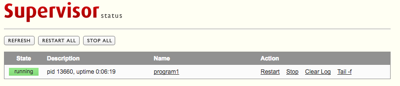

Supervisor plugin: Overview
Supervisor is a client/server system that allows its users to monitor and control a number of processes on UNIX-like operating systems.
It shares some of the same goals of programs like systemd, but unlike this one, it is not meant to be run as a substitute for init as “process id 1”. Instead it is meant to be used to control processes related to a project or a customer, and is meant to start like any other program at boot time.
A supervisor instance is aimed to control several application programs. In practice, in most case, only one instance per application will be necessary.
This plugin allow both to create a supervisor instance and to define all programs this instance will have to manage, by defined supervisor_programs
Creating a supervisor instance using this module require root access on the target host.
But this instance is then delegated to a specific (typically non-priviledged) user (or technical account) which then will be able to perform any admin operation (Add/remove programs, start/stop, ...).
This module will also allow HADeploy to handle start and stop of the associated programs.
A simple case
Let's begin with a simple example. In this example, we want to deploy a dameon on the two edge nodes of a cluster.
This deamon will run under the tsup technical account. We also want the supervisor to be manageable throught this account.
Here is a main application file, saved as app.yml
hosts:
- { name: en1, ssh_host: en1.mycluster.com, ssh_user: root, ssh_private_key_file: keys/root_id }
- { name: en2, ssh_host: en2.mycluster.com, ssh_user: root, ssh_private_key_file: keys/root_id }
local_templates_folders:
- ./templates
users:
- login: tsup
folders:
- { scope: all, path: /opt/tsup, owner: tsup, group: tsup, mode: "0755" }
supervisors:
- name: tsupv
scope: all
user: tsup
group: tsup
files:
- { scope: all, src: "tmpl://program1.sh", dest_folder: /opt/tsup, owner: tsup, group: tsup, mode: "0755" }
supervisor_programs:
- name: program1
supervisor: tsupv
command: "/bin/bash /opt/tsup/program1.sh"
In this file we:
-
Describe the target cluster and how to connect to.
-
Define a local location as our template repository.
-
Create the
tsuptechnical account. -
Create a folder
/opt/tsupas an home folder for the application. -
Create a supervisor instance name
tsupv. -
Copy the
program1.shin the/opt/tsupfolder. -
And declare this program to be managed by the supervisor instance we just defined.
Of course, we will need a test program to manage. Let's write a simple script:
#!/bin/bash
user=$(id -un)
prg=program1
while true
do
echo "$(date -Iseconds) - - - Hello from ${user}:${prg} to stdout....."
sleep 2
done
And save it as templates/program1.sh.
Our application is now ready to be deployed. On the deployement node (Called deployer here):
[hadeployer]$ hadeploy --src app.yml --action deploy
Then, we can log on one edge node and ensure both the daemon and the supervisor run under the tsup account.
[en1]$ pgrep -au tsup
4392 /usr/bin/python /usr/bin/supervisord -c /etc/supervisord_tsupv.conf
4621 /bin/bash /opt/tsup/program1.sh
7983 sleep 2
And we can now play with the supervisor command line interface created for our instance (supervisorctl_tsupv), under the tsup account:
[en1]$ sudo -u tsup supervisorctl_tsupv
program1 RUNNING pid 4621, uptime 0:07:03
supervisor> help
default commands (type help <topic>):
=====================================
add clear fg open quit remove restart start stop update
avail exit maintail pid reload reread shutdown status tail version
supervisor> status program1
program1 RUNNING pid 4621, uptime 0:07:20
supervisor> tail program1
llo from tsup:program1 to stdout.....
2017-10-15T08:53:28+0000 - - - Hello from tsup:program1 to stdout.....
...
...
2017-10-15T08:54:09+0000 - - - Hello from tsup:program1 to stdout.....
2017-10-15T08:54:11+0000 - - - Hello from tsup:program1 to stdout.....
supervisor> stop program1
program1: stopped
supervisor> status
program1 STOPPED Oct 15 08:54 AM
supervisor> start program1
program1: started
supervisor> status
program1 RUNNING pid 8270, uptime 0:00:05
supervisor>
From the HADeploy node, we can stop both the program and the supervisor in one command:
[hadeployer]$ hadeploy --src app.yml --action stop
Ensure this is no process running under tsup account on the edge node:
[en1]$ pgrep -au tsup
Back to the HADeploy node, restart everything:
[hadeployer]$ hadeploy --src app.yml --action start
An check on the edge node:
[en1]$ pgrep -au tsup
8887 /usr/bin/python /usr/bin/supervisord -c /etc/supervisord_tsupv.conf
8974 /bin/bash /opt/tsup/program1.sh
9046 sleep 2
Actions stop, start and status
As just mentioned, the Supervisor plugin introduce three new actions:
hadeploy --src ..... --action stop
Will stop all supervisor_programs and then all supervisord daemon described by the supervisors list which have the managed flag to true. And:
hadeploy --src ..... --action start
Will start the same supervisord daemon, then all supervisor_programs. And:
hadeploy --src ..... --action status
Will display current status in a rather primitive form.
Web interface
Each supervisor instance can expose a web interface for management. We can easily configure it by adding a line to our supervisor definition:
supervisors:
- name: tsupv
scope: all
user: tsup
group: tsup
http_server: { endpoint: "0.0.0.0:9001", username: admin, password: admin }
Then, we just neeed to trigger a new deployment:
[hadeployer]$ hadeploy --src app.yml --action deploy
If we look at the deployment messages, we can see only two tasks where performed:
TASK [Setup configuration file /etc/supervisord_tsupv.conf] ****************************************************************************************************
changed: [en1]
TASK [Setup supervisord_tsupv.service] *************************************************************************************************************************
ok: [en1]
TASK [Setup /usr/bin/supervisorctl_tsupv] **********************************************************************************************************************
ok: [en1]
RUNNING HANDLER [Restart supervisord_tsupv service] ************************************************************************************************************
changed: [en1]
.....
.....
PLAY RECAP *****************************************************************************************************************************************************
en1 : ok=19 changed=2 unreachable=0 failed=0
-
The supervisor configuration file
/etc/supervisord_tsupv.confhas be regenerated, with the http_server configuration. -
The supervisor
supervisord_tsupvhas been restarted
Of course, if we trigger again a deployment no change will be performed anymore.
We can now point a browser to http://en1.mycluster.com:9001/, to see:

Of course, in real life, we will not use 'admin' as a password. And we will not provide it as clear text, but provide its SHA-1 form instead. See Supervisors Web interface
Notifications: daemon restart
Let's say we now want to update our program1.sh.
We can modify it and trigger a new deployment. HADeploy will notice the modification and push the new version on the target hosts. But, the running daemon will be unafected.
We can restart it manually. But, HADeploy provide a mechanisme to automate this. By adding a notify attribute to the files definition:
files:
- { scope: all, notify: ["supervisor://tsupv/program1"], src: "tmpl://program1.sh", dest_folder: /opt/tsup, owner: tsup, group: tsup, mode: "0755" }
This will instruct HADeploy to restart the program program1 of the supervisor instance tsupv in case of modification of program1.sh
TASK [Copy template file 'program1.sh' to '/opt/tsup/program1.sh'] *********************************************************************************************
changed: [en1]
TASK [Get current state for supervisor_tsupv_program1 programs] ************************************************************************************************
ok: [en1]
RUNNING HANDLER [Restart supervisor_tsupv program program1] ****************************************************************************************************
changed: [en1]
...
...
PLAY RECAP *****************************************************************************************************************************************************
en1 : ok=20 changed=2 unreachable=0 failed=0
Non-root deployment
Creating a supervisor instance needs root access on the target nodes.
Requiring root access for all deployment can be a problem, as it may restrain the number of people able to deploy application. And, an error in the deployment file can corrupt or even destroy the whole target cluster.
A solution to this problem would be to split the deployment in two phases:
-
An initial deployment, under root access, will create dedicated folders, namespace, databases, ... thus defining a limited space inside which the application will be deployed. Such space can be called 'box', 'container' or 'corridor'.
-
Application deployment, performed under non-priviledged account (Typically the application technical account) and which will be limited to operate in the space defined previously.
In our use case, the supervisor instance creation will be performed during the initial stage, while program1.sh will be deployed under application account.
This will lead to split our application file in two parts:
A first file, named init.yml:
hosts:
- { name: en1, ssh_host: en1.mycluster.com, ssh_user: root, ssh_private_key_file: keys/root_id }
- { name: en2, ssh_host: en2.mycluster.com, ssh_user: root, ssh_private_key_file: keys/root_id }
users:
- login: tsup
authorized_keys:
- keys/tsup_id.pub
folders:
- { scope: all, path: /opt/tsup, owner: tsup, group: tsup, mode: "0755" }
supervisors:
- name: tsupv
scope: all
user: tsup
group: tsup
http_server: { endpoint: "0.0.0.0:9001", username: admin, password: admin }
Let's comment it:
-
First, as before, we access the target node using the
rootcredential. -
As before, we create our application technical account. But we had an
authorized_keyto be able to directly log on under this account. Of course, we have previously generated a key pair. -
Then, we create the application main folder. Note we need to be root to create a folder in
/opt. -
And we create the supervisor instance as previously.
Now, we will create the application deployment part, as app.yml:
hosts:
- { name: en1, ssh_host: en1.mycluster.com, ssh_user: tsup, ssh_private_key_file: keys/tsup_id }
- { name: en2, ssh_host: en2.mycluster.com, ssh_user: tsup, ssh_private_key_file: keys/tsup_id }
local_templates_folders:
- ./templates
files:
- { scope: all, notify: "tsupv:program1", src: "tmpl://program1.sh", dest_folder: /opt/tsup, owner: tsup, group: tsup, mode: "0755" }
supervisor_programs:
- name: program1
supervisor: tsupv
command: "/bin/bash /opt/tsup/program1.sh"
supervisors:
- name: tsupv
scope: all
user: tsup
group: tsup
http_server: { endpoint: "0.0.0.0:9001", username: admin, password: admin }
managed: no
Let's comment it:
-
We now access the target host with the
tsupcredential. -
As before, we define a local location as our template repository.
-
As before, we copy the
program1.shin the/opt/tsupfolder. -
And, as before, we declare this program to be managed by the supervisor instance we defined previously.
But, there is a problem. To perform this last operation, HADeploy need to know most of the parameters of the supervisor (Mostly its file layout). This is why we need to insert the supervisor definition in the file, here at the end.
But, we just want to describe it. We don't want to manage it (This is the role of the init.yml script). This is why we add the managed: no attribute.
Don't be confused. Managing supervisor's program is not managing the supervisor by itself.
You can now deploy the application container:
hadeploy --src init.yml --action deploy
And then the application by itself:
hadeploy --src app.yml --action deploy
This pattern provide other benefits:
-
Application (re)deployment is faster, as the number of task is reduced.
-
We have now finer control on application stop and start.
hadeploy --src app.yml --action stopwill only stop the application programs, not the supervisor itself.
Root key protection
But, how can we prevent a regular (non-root) user to launch the init.yml script ?
A simple answer is to arrange for the root private key (keys/root_id in our case) to be accessible only by the root user (or by a priviledged users group) on the HADeploy node.
This is an easy way to bind priviledged access on target cluster to privileged access on the deployment node.
Non-root deployment improved
If you look at the previous init.yml and app.yml, you will find some redundancies:
-
The host inventory
-
The supervisor definition.
So, we need some refactoring to have something more maintainable:
First, we isolate our target cluster inventory definition in a separate file mycluster.yml:
hosts:
- { name: en1, ssh_host: en1.mycluster.com }
- { name: en2, ssh_host: en2.mycluster.com }
Note than we have remove all ssh connection information.
The, we isolate the supervisor(s) definitions in another file supervisors.yml:
supervisors:
- name: tsupv
scope: all
user: tsup
group: tsup
http_server: { endpoint: "0.0.0.0:9001", username: admin, password: admin }
managed: ${managing_supervisors}
Note than we can set the managed attribute by a variable.
And here is the new version of the init.ymlfile:
host_overrides:
- name: all
ssh_user: root
ssh_private_key_file: keys/root_id
users:
- login: tsup
authorized_keys:
- keys/tsup_id.pub
folders:
- { scope: all, path: /opt/tsup, owner: tsup, group: tsup, mode: "0755" }
vars:
managing_supervisors: yes
include: supervisors.yml
And the new version of the app.yml file:
host_overrides:
- name: all
ssh_user: tsup
ssh_private_key_file: keys/tsup_id
vars:
managing_supervisors: no
include: supervisors.yml
local_templates_folders:
- ./templates
files:
- { scope: all, notify: "tsupv:program1", src: "tmpl://program1.sh", dest_folder: /opt/tsup, owner: tsup, group: tsup, mode: "0755" }
supervisor_programs:
- name: program1
supervisor: tsupv
command: "/bin/bash /opt/tsup/program1.sh"
We can now proceed with the application container deployment:
hadeploy --src mycluster.yml --src init.yml --action deploy
And then the application deployment:
hadeploy --src mycluster.yml --src app.yml --action deploy
Note than we provide the mycluster.yml on the command line. An alternative would be to include it in the init.yml and the app.yml. But, if you have several target clusters, this solution is far more flexible.